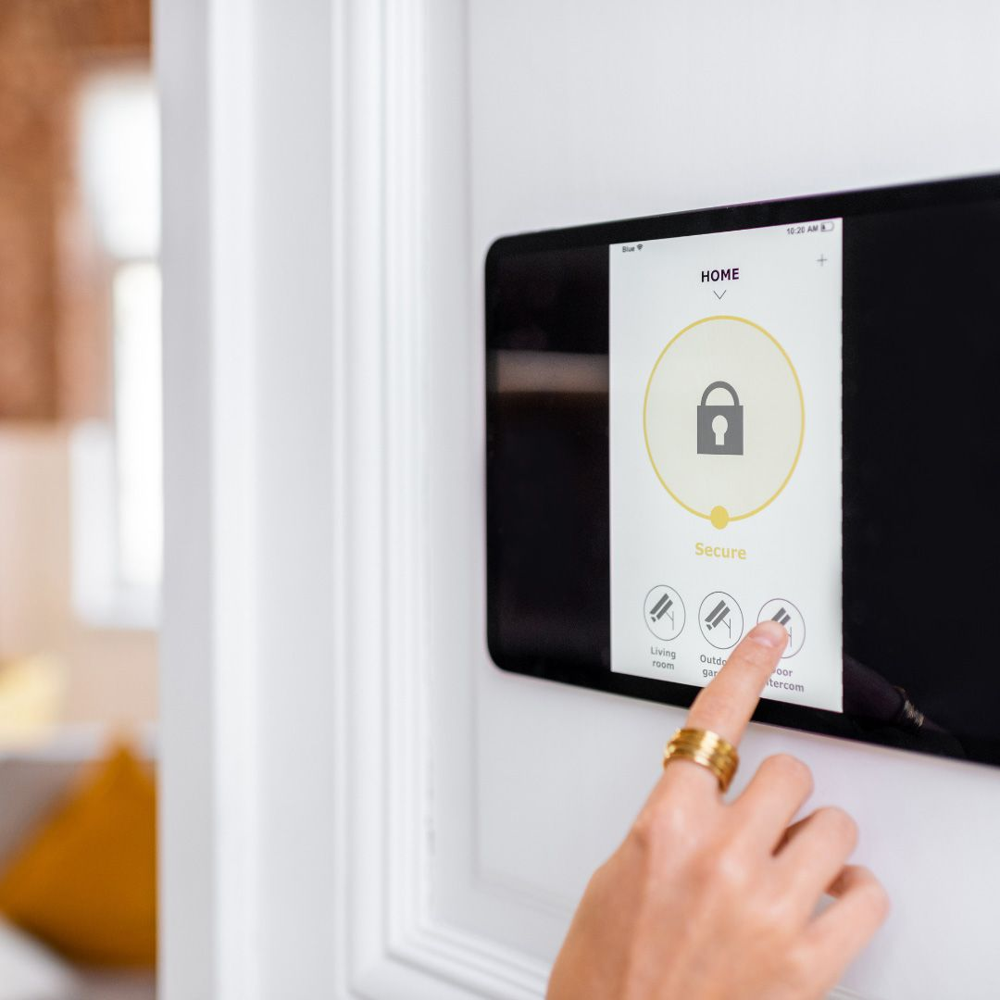
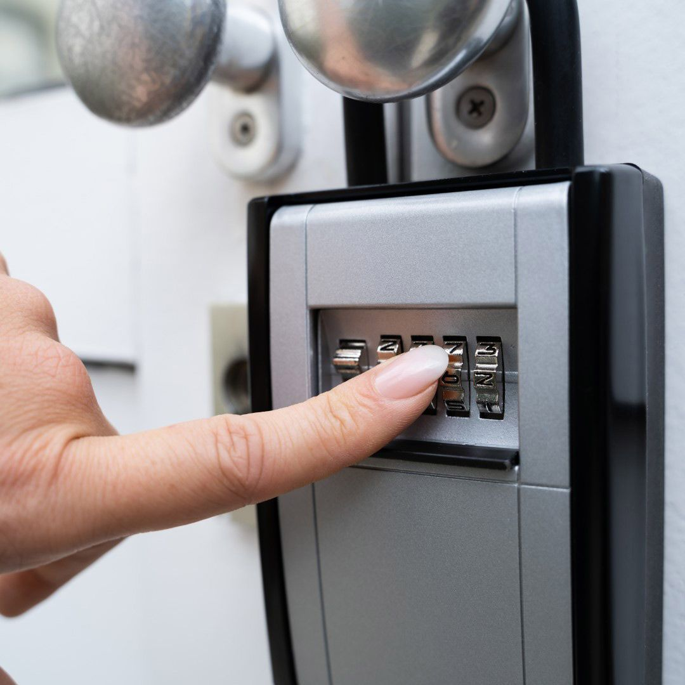

On this page
AT A GLANCE
At SPL Security Solutions, we deliver reliable 24/7 mobile locksmith services across Arundel, providing professional support exactly when and where you need it.
Get A Free Quote Now!
Thank you for contacting SPL Security Solutions.
We will be in touch soon.

Mobile Locksmiths Arundel
At SPL Security Solutions, we deliver reliable 24/7 mobile locksmith services across Arundel, providing professional support exactly when and where you need it. From resolving unexpected lockouts to upgrading security systems for your home, vehicle or business, our skilled locksmiths handle a variety of tasks with precision and care.
Our mobile units are equipped with cutting-edge tools and a range of lock and key solutions, enabling us to provide efficient on-site services. Whether you’re replacing old locks, programming new car keys or setting up advanced access systems, we ensure your security is up to the task.
Call us on (07) 5588 8111 for locksmith services tailored to your needs in Arundel.
Our residential locksmith services in Arundel focus on enhancing the safety and usability of your home. From rekeying locks and repairing faulty hardware to installing smart locks, we help you protect what matters most.
Our commercial locksmith services in Arundel are tailored to meet the security needs of businesses. We provide high-security lock installations, master key systems and access control solutions to safeguard your assets and streamline access management.
Our automotive locksmith services in Arundel deliver fast assistance for car lockouts, ignition repairs, and key replacements. We specialise in programming transponder keys and handling advanced vehicle security systems.
Our restricted key systems in Arundel provide secure and controlled access by preventing unauthorised key duplication. These systems are ideal for both residential and commercial properties that require advanced access control.
We offer safe services in Arundel, including installation, unlocking and maintenance. Choose from wall safes, floor safes, digital safes and deposit safes to keep your valuables secure and accessible.
Our security systems in Arundel integrate components like CCTV cameras, motion detectors and smart alarms to deliver comprehensive property protection. These systems are customisable with remote monitoring options for added convenience.
Our lock hardware services in Arundel include high-security deadbolts, tamper-proof locks and cutting-edge smart locks. We ensure your locks are designed to withstand modern security challenges.
Upgrade your property with durable and stylish door hardware in Arundel. From weather-resistant hinges to sleek handles and efficient sliding door systems, we provide solutions that combine security with aesthetic appeal.
Our versatile architectural door hardware includes fire-resistant options, smooth door closers, and elegant handles, designed to complement a variety of interior styles in Arundel.
Emergency Locksmith Services Arundel
Unexpected lock-related problems can arise at any time, but our team is ready to help with prompt and effective solutions.
- For homeowners
Locked out of your home or dealing with broken locks can be both stressful and inconvenient. We provide quick entry solutions, rekeying services and lock repairs to restore security and accessibility. - For business owners
Malfunctioning access control systems or office lockouts can disrupt operations. We offer efficient repairs and replacements to minimise downtime and protect your property. - For vehicle owners
Whether you’re dealing with a lockout, a broken ignition or a lost key, we offer on-site services like key cutting, transponder programming and ignition repairs to get you back on the road.

Contact Details
24/7 Emergency Locksmiths or Security Tech


Trading Hours
Retail Shop

Frequently Asked Questions
-
How can I ensure my home locks are up to date with modern security standards?
Regularly inspecting your locks for wear and upgrading to smart locks or high-security options can help you stay ahead of potential security risks. A locksmith can assess your current system and recommend improvements based on the latest technology.
-
What’s the benefit of rekeying locks instead of replacing them?
Rekeying is a cost-effective solution that changes the internal mechanism of your existing locks, so old keys no longer work. This is ideal for situations like moving into a new property or after losing a key, as it provides enhanced security without the expense of full lock replacement.
Locksmith & Security Solutions Gold Coast, Brisbane & Northern NSW